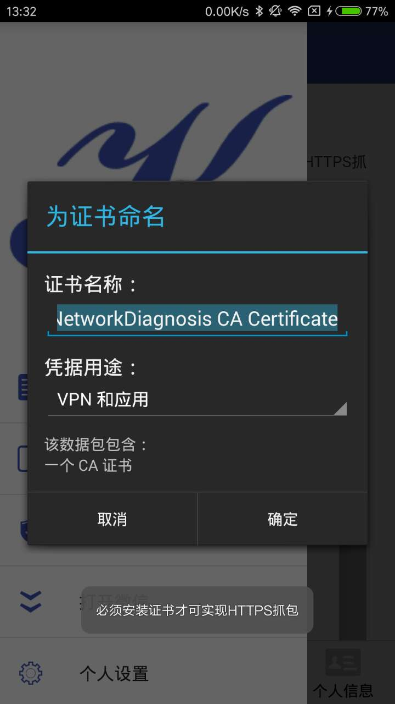
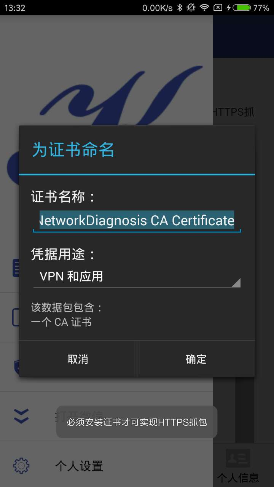
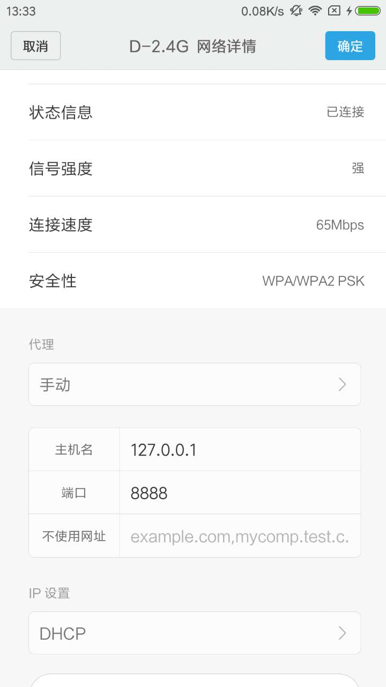
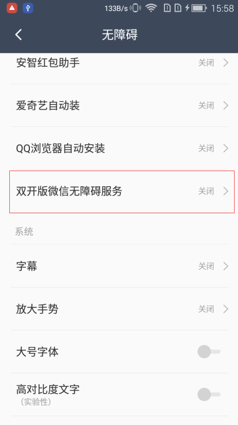
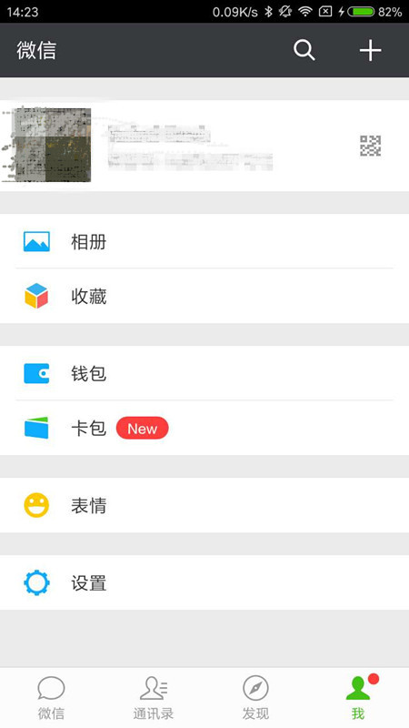

第一次进入程序需要安装CA证书以便进行HTTPS抓包（原理同fiddler，MITM中间人）。
屏幕向右侧滑拉出侧滑菜单(或点击屏幕左上角的三条杠的图标弹出侧滑菜单)，点击“安装证书”；请点击确认按钮， 屏幕吐司显示“已安装”即为成功。(注：如果手机未设置锁屏图案或密码则无法安装证书，请先添加任意一种安全屏幕锁定类型) 
第一次进入程序需要安装CA证书以便进行HTTPS抓包（原理同fiddler，MITM中间人）。
屏幕向右侧滑拉出侧滑菜单(或点击屏幕左上角的三条杠的图标弹出侧滑菜单)，点击“安装证书”；请点击确认按钮， 屏幕吐司显示“已安装”即为成功。(注：如果手机未设置锁屏图案或密码则无法安装证书，请先添加任意一种安全屏幕锁定类型) 
通过设置系统代理可以实现抓取别的APP的请求包。
在侧滑菜单里点击“设置系统代理”，打开手机的WIFI设置，选中你要链接的WIFI，修改该网络，将代理由 “无”改成“手动”，主机名：127.0.0.1，端口号改为8888(有些手机是长按该网络，弹出dialog后选中修改网络， 在该网络详情界面点击“显示高级选项”，方可修改) 
开启该服务，打开微信后，微信将以一定的频率自动刷新。
在侧滑菜单里点击“开启微信无障碍服务”后，跳转至系统相关设置界面，开启“微信无障碍服务” 
打开微信客户端(主页面)，开始刷新数据 